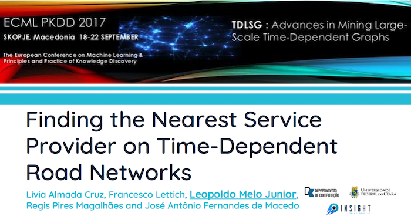
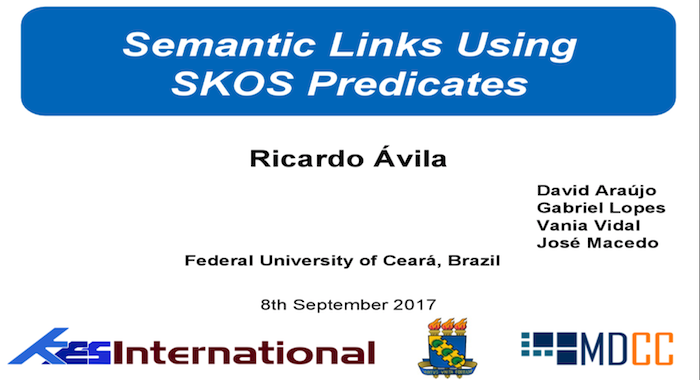
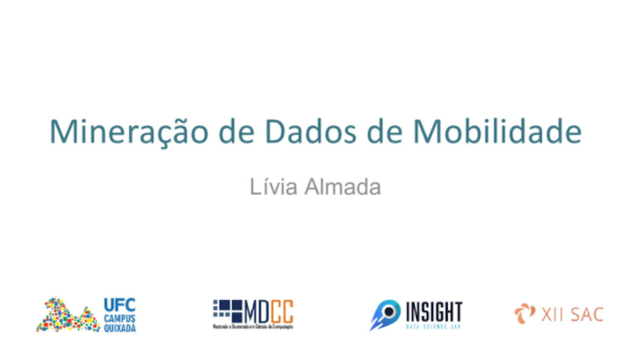

Here you can find all ours slides/videos and also know where you can find us in the future
Emanuel Oliveira, Igo Brilhante and José Antônio Macedo TrajectMe: Planning sightseeing tours with Hotel Selection from Trajectory Data LocalRec'18 Proceedings of the 2nd ACM SIGSPATIAL Workshop on Recommendations for Location-based Services and Social Networks (November 06, 2018) [Event] [Presentation]
Ricardo Ávila, Salomão Santos, David Araújo, Vânia Vidal and José Antônio Macedo Ligações Semânticas Utilizando Predicados SKOS (in portuguese) 32th Brazilian Database Symposium (SBBD) (October 02, 2017) [Event]
 Lívia Almada Cruz, Francesco Lettich, Leopoldo Soares Júnior, Regis Pires Magalhães and José Antônio Macedo Finding the Nearest Service Provider on Time-Dependent Road Networks Workshop Advances in Mining Large-Scale Time Dependent Graphs (TD-LSG) (September 18, 2017) [Event] [Presentation]
 Ricardo Ávila, Salomão Santos, David Araújo, Vânia Vidal and José Antônio Macedo Semantic Links Using SKOS Predicates 21st International Conference on Knowledge-Based and Intelligent Information & Engineering Systems (KES) (September 06, 2017) [Event] [Presentation]
Profa. Ticiana Linhares Big Open Data (in portuguese) XII Computer Academic Week - Federal University of Ceará (August 25, 2017) [Event] [Presentation]
 Profa. Lívia Almada Mobility Data Mining (in portuguese) XII Computer Academic Week - Federal University of Ceará (August 24, 2017) [Event] [Presentation]